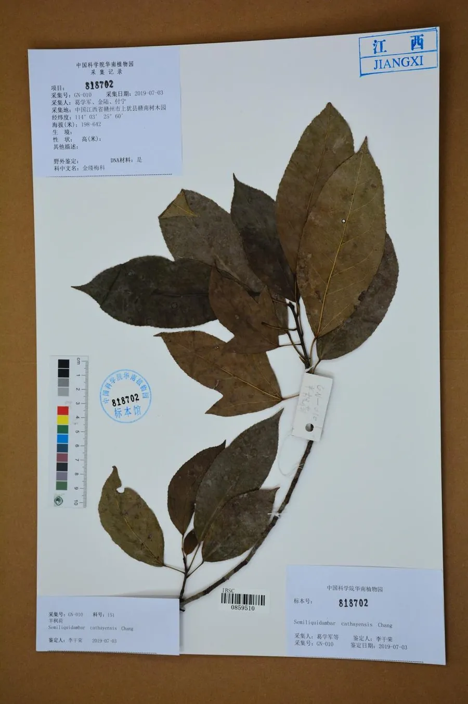

乔木 · 植物界
半枫荷 Semiliquidambar cathayensis

蕈树科半枫荷属常绿乔木，叶形一半像枫、一半像荷，是中国特有的珍贵药用树种，被列为国家二级保护植物。
- 分类
- 门被子植物门纲木兰纲目虎耳草目科蕈树科属半枫荷属
- 栖息环境
- 海拔 600 米以下的山地疏林与沟谷，喜温暖湿润半阴
- 地理分布
- 中国广东、广西、江西、福建、湖南、贵州等地，为中国特有
- 保护级别
- 国家二级重点保护野生植物；IUCN 暂无评估
物种志
半枫荷为蕈树科半枫荷属常绿乔木，高可达十五米，树皮灰褐色，小枝有短柔毛。叶革质，二型，有的掌状三裂似枫叶，有的不裂而呈卵状椭圆形似荷叶，边缘有锯齿，表面深绿。花单性，雌雄同株，组成头状花序，花期四至五月；果序球形，蒴果木质，成熟时开裂，果期九至十月。
半枫荷是中国特有的珍稀树种，分布于广东、广西、江西、福建、湖南、贵州等地，多生于海拔六百米以下的山地疏林和沟谷。它喜温暖湿润和半阴环境，适宜深厚肥沃、排水良好的酸性土壤。根皮和树皮在民间入药，有祛风除湿、活血消肿之效，常用于风湿痹痛和跌打损伤；树形优美，也可作庭园树。由于野生植株稀少、药用采挖严重，被列为国家二级重点保护野生植物。
形态与习性
- 株高可达 15 m，树皮灰褐色
- 花期4–5 月，头状花序单性
- 果期9–10 月，果序球形
- 光照喜半阴，幼树忌暴晒
- 水分喜湿润，忌长期积水
- 土壤深厚肥沃的酸性土
- 主要用途根皮药用，庭园观赏
趣味知识
- 半枫荷同一株树上既有三裂如枫的叶，也有不裂如荷的叶，叶形奇特。
- 它的根皮是华南民间常用的祛风湿药，因此野生植株常被采挖。
- 半枫荷属为中国特有属，对研究蕈树科的演化具有重要价值。